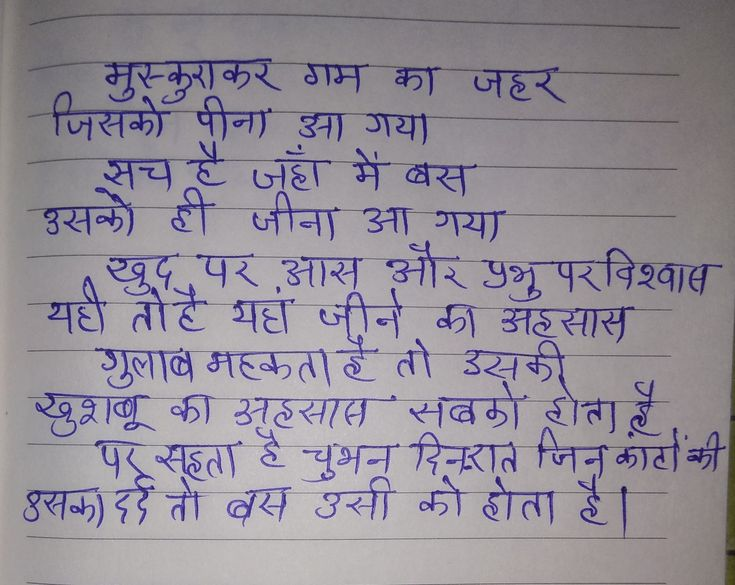

File: hin_sample_20.jpg

⏳ Pending Integration...
मुस्कुराकर गम का जहर जिसको पीना आ गया सच है जहाँ में बस उसको ही जीना आ गया खुद, पर, आस और प्रभु पर विश्वास यही तो है यह जीने का अहसास गुलाब महकता है तो उसकी खुशबू का अहसास सबको होता है पर सहता है चुंबन दिन-रात जिन कांटों की उसका दर्द तो बस उसी को होता है।
मुस्कुराकर गम का जहर जिसको पीना आ गया सच है जहाँ में बस उसको ही जीना आ गया खुद पर, आस और प्रभु पर विश्वास यही तोहै यहां जीने का अहसास गुलाब महकता है तो उसकी खुशबू का अहसास सबको होता है पर सहता है चुभन दिनरात जिनकाटों की उसका दर्द तो बस उसी को होता है।
| >> कदम ee - ore oo ते जा मजस ; >} a ' SX. je tag ae sas) की लीना a गया on | आय HR Sy “ay as “ey mh को Se जुलाब मह्यत सब BAG का उठ्सात सबको ह Ea, 4 AS सह्ता 2 चुअन RR a 377 ता क्य sat को ता आओ
pbs 7 ee HIST Oy का et 7उ+- a a आई लय निया: D Bae eer Fag उसकी ही खाद पर जाय जोर उम्र परविश्वात : कक] eee | ; «rei HYG वंश अली Sea है| |
गम का जहर की अह्सास तो गुलाव चुशनी को होता
❌ OCR Failed
ईश्वरत्वित्
गातन द जठर जिर्खकों उनागाया है जूर्ठ। मेंब्र इखक जीना उना शान्या ई नुश्रुद्रश्वासू उनीर अशुपरविश्वाष यहे तोहे भट्या छ क़ उहूवात गुजाब मरकंताहतो उन्खूाक ष्शग्य का उनट्रात इनदिब टीत पहुगुूह है चुभनूर्नएत जि रु्तकाद्दे शर्स उखोा को शोता
जिसकों सकोपीना मुस्कुएाकर पीना गम क जहर सच स़च टं जुहां नना मैबस गें गया बन उसकों ठी जीना ग गया ६ुड़ यथी ऋुप तोंट पर यां यहांजीने आ़स जीने झर और की पुभुपरवि पुभु मुपरविशखा गुलाबमहक बाबमहकताह महकताह तो उसकी अंट्रसास कुशबू कु अटमाम मबगों जिनकांटो ट्रोतता क्ी उसकादद सकारडतोंब पासतां रतोंबस गॉरबस त हैचुभन चुंभन उसी कोटोता रिनतं को है